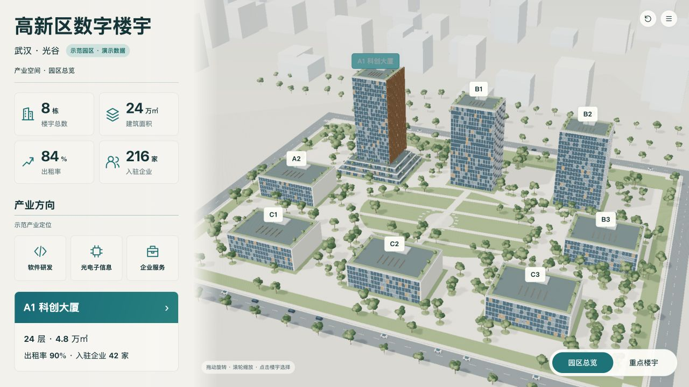
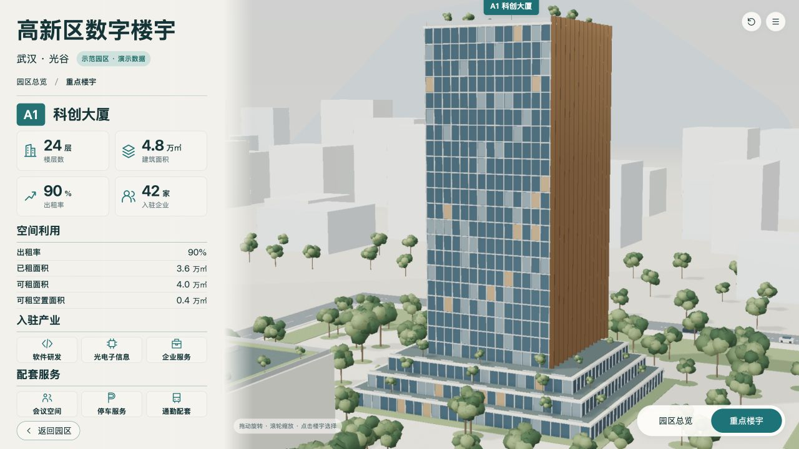

与确认基准并排；该版近景相机调整，未宣称精确拟合AI投影。
两图保留原始比例，AI图不具备测绘精度；对照不把AI不可数细节当作工程数据。浏览器截图是实际WebGL画面。



| ID | 预期 | 实际 | 原因假设 | 源修改 | 重建/复验证据 | 结果 | 后续 |
|---|---|---|---|---|---|---|---|
| V-03 | 天空不出现灰色三角形 | AO法线缓冲把环境球当作实体，近景出现灰色片区 | 天空球参与GBuffer | v6改用背景纹理而非天空实体球 | building-detailed-v5.jpg → building-detailed-v6.jpg | 下一版已修复 | 检查旋转后背景 |
| V-04 | 古铜翼片之间可见玻璃 | 低角度下翼片近乎连成整面 | 翼片突出宽度大于投影缝隙 | v6将翼片突出宽度从1.3m改为0.65m，厚度0.18m | building-detailed-v5.jpg → building-detailed-v6.jpg | 下一版已修复 | 材质纹理另校验 |
| V-06 | 自然树冠与有层次屋顶花园 | 改为13簇较小树冠、补屋顶栏杆和三边种植；仍较简化 | 实时几何造型细节少于AI写实插图 | 脚本增加树冠层次和屋顶实体 | campus-detailed-v5.jpg | 改善，仍有差距 | 最终对照保留写实度差异 |
[
{
"level": "campus",
"baseline": "design/concepts/B-campus-v2.png",
"baselineSha256": "b7256276a9357e0255ac1799e189de000f3c69563e0672624b826acfb76db264",
"actual": "checks/campus-detailed-v5.jpg",
"actualSha256": "2231475ec472873f9a18e50366a872b63b3b06a185142fe9dc249c188764c71a"
},
{
"level": "building",
"baseline": "design/concepts/B-building-v2r1.png",
"baselineSha256": "1aa5b6d94d1b17ae9b7eb815fa59fa75c1f0f44f88a9f2e41045d85aae8f43e4",
"actual": "checks/building-detailed-v5.jpg",
"actualSha256": "872523003592ce1b731eaedc6ba83b4dada3a891d6bc5de74ba43c63f3c43e8b"
}
]